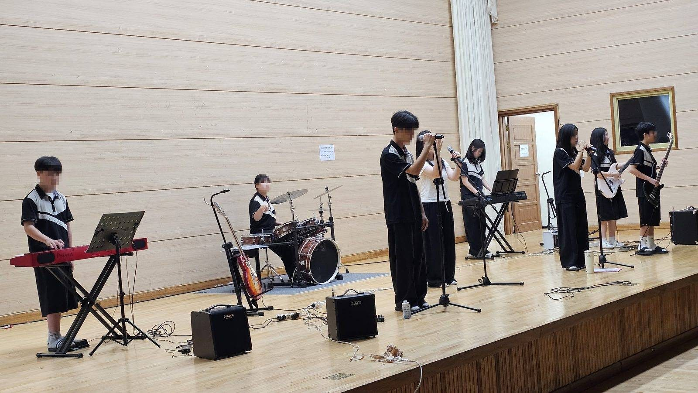

①역할 주기
“너는 ○○ 장르 전문 작사가야”
AI에게 어떤 사람으로 답하라고 정해 준다. 장르가 달라지면 어휘와 문장 길이가 달라진다.
남는 기록 : 프롬프트 원문
2026. 학교예술교육 실천사례 연구대회

시나브로 프로젝트
시나브로 — 모르는 사이에 조금씩, 그러나 반드시 자란다
이 연구는 ‘감상-자기이해-창작-AI 검증-공유-진로’를 하나의 프로젝트 흐름으로 연결하여, 연주 기능의 부담을 낮추면서도 학생이 자신의 이야기를 음악으로 표현하고 AI 결과를 스스로 판단하도록 설계한 실천 사례이다. 핵심 성과는 AI가 창작을 대신하게 한 것이 아니라, 학생의 선택·수정·설명 과정을 더 분명한 학습 증거로 만든 데 있다.
생성형 AI가 짧은 시간에 음악을 만들어 주는 환경에서, 학교예술교육이 학생에게 남겨야 할 것은 단순한 결과물 제작 능력이 아니라 자기 생각과 감정을 음악으로 표현하고, AI의 결과를 비판적으로 선택·수정하며, 실제 청중과 소통하는 경험이라는 문제의식에서 본 연구가 출발하였고, 이를 위해 ‘시나브로’ 네 글자에 맞춘 실천과제를 설계하였다.
연구 문제는 첫째, 연주 기능이 없어도 참여 가능한 창작 경로가 창작 자신감을 높이는가? 둘째, AI 산출물을 비교·선택하고 그 근거를 음악 용어로 설명하게 할 때 AI 활용과 음악 개념 학습이 함께 향상되는가? 셋째, 교사 연구회 확산을 통해 다른 학교에서도 재현 가능한 수업이 되는가? 로 설정하였다.
| 실천 과제 | 무엇을 하는가? | 어떤 장벽을 넘는가? | 핵심 활동 | 기르는 역량 |
|---|---|---|---|---|
| 詩 | 시의 품에 안기다 메시지를 만나다 | 창작 이전의 문제 말할 내용이 없다 | 계기교육 메시지를 시의 언어로 (연간 8주제) 「진달래꽃」 × 서양음악사 20개 양식 비교 감상 | 심미적 감성 UP 문화적 이해 UP |
| 나 | 나를 노래하다 나의 장면을 찾다 | 장벽 ① 표현 M 2.31 · 11.5% | RUPA 4단계 · 감정 태그 · 30초 소개 「음악적 장치 분석표」 → 절·후렴 가사 쓰기 | 자기 이해 UP 창의적 표현 UP |
| 브 | 브레인 AI와 협력하다 AI를 다스려 빚다 | 장벽 ② 검증 M 2.78 · 24.5% | 프롬프트 4칸 카드 · 2종 생성 비교 고른 이유를 음악 용어로 기록 → 수정 이력 평가 | AI 리터러시 UP 비판적 검증 UP |
| 로 | 세상에 로그인하다 실제 청중과 나누다 | 장벽 ③ 연결 M 2.73 · 21.9% | 리릭 비디오 · 소축제 · 방송 · 급식실 QR · 버스킹 음악 산업 12개 분야 진로 탐구 · 모둠 뮤지컬 | 공동체·소통 UP 진로 개척 UP |
| 확산 | 연구회로 로그인하다 동료와 함께 | 한 교실에서 끝나지 않도록 | DFMR 연구회 조직·운영 · 정기 협의회 · 자체 연수 · 공개수업 1회 완료·1회 예정 | 교원 전문성 UP 지역 일반화 UP |
모든 실천과제는 ‘묻다 → 찾다 → 빚다 → 나누다’의 공통 절차를 반복한다. 학생은 메시지와 자신의 장면을 찾고, 감상에서 발견한 빠르기·조성·악기 편성·짜임새 등의 음악 개념을 창작의 조작 언어로 사용한다. AI는 완성품을 대신 만드는 도구가 아니라 여러 대안을 생성하고 비교·수정하기 위한 협력자로 배치하였다. 결과물은 음원에서 끝나지 않고 가사·이미지·싱크 데이터를 결합한 단일 HTML 리릭 비디오, QR, 공연·방송 기록 등으로 실제 청중에게 연결된다.
기존 사전·사후 효과크기 도표는 제외했습니다. 서로 다른 문항의 평균을 직접 비교하지 않기 위해서입니다.
3월 사전 진단과 7~8월 중간 성찰은 문항이 달라 직접적인 향상 검증에 사용하지 않는다. 10월 활동 마무리 시 동일 문항 재조사와 학생 작품·수정 이력 분석을 실시하고, 확인된 결과를 11월 3일 제출본에 반영할 계획이다.
연구의 일반화 단위는 특정 AI 서비스의 조작법이 아니라 ‘절차’이다. 프롬프트 4단계 카드, RUPA 모형, 루브릭과 활동지는 도구가 바뀌어도 재사용할 수 있도록 구성되었고, 자체 개발 플랫폼 3종은 학생용·수업자용 화면을 분리해 설정 정보만 바꾸면 다른 학교에서도 곧 바로 적용할 수 있도록 설계하였다.
서버를 새로 짜거나 사용자 명부를 만들 일이 없다
같은 계정 체계, 같은 운영 환경
→ 지역 단위 일반화의 기반
AI가 30초 만에 노래를 만들어 주는 시대, 학교예술교육은 학생에게 무엇을 남기는가?
2022 개정 교육과정은 창의성, 디지털 소양, 협력과 소통, 자기주도성의 통합적 함양을 강조하고 있다. 본 연구자는 2026년 3월, 중학교 3학년 192명에게 열 가지를 물었다. 평균 3.0 이상인 문항은 셋뿐이었고, 그중 가장 낮은 문항이 ‘나는 내 생각과 감정을 담아 한 편의 노래 가사로 창작할 수 있다’였다.(평균 2.31점, 긍정응답 11.5%) 창작 가능성에 긍정적으로 응답한 학생은 11.5%에 그쳤다. 나머지 응답에는 중립 응답도 포함되므로 모두 부정 응답으로 해석하지 않았다.1
주 1반면 ‘친구의 창작물을 편견 없이 경청하고 긍정적 피드백을 줄 수 있다’는 M=3.27(긍정 44.8%)로 가장 높았다. 학생에게 ‘들어줄 준비’는 있으나 ‘말할 수단’이 없었다는 뜻으로 해석된다
| 구분 | 답변내용 | 주요 특징 및 학생 반응 | 평균 점수 | 긍정 응답률 |
|---|---|---|---|---|
| 장벽 ① | 나는 음악을 못 만들어요 | 악기를 다룰 줄 알아야 창작이라 생각함. 잘하는 몇 명만 하는 수업으로 인식 | 2.31 | 11.5% |
| 장벽 ② | AI가 준 걸 그냥 써요 | 처음 나온 결과를 그대로 제출함. 수업이 단순 체험으로 끝남. | 2.78 | 24.5% |
| 장벽 ③ | 음악은 제 일이 아니에요 | 음악으로 남과 이야기해 본 적이 드물고, 진로 수업도 듣기만 함 | 2.73 | 21.9% |
사전 실태 조사에서 확인한 세 개의 장벽
이러한 결과를 통해 본 연구자는 아래와 같은 3가지의 장벽을 발견하였다.
시나브로 — 모르는 사이에 조금씩, 그러나 반드시 자란다
예술적 성장은 한 번의 무대가 아니라 여러 번의 작은 시도가 쌓여 서서히 일어난다. 순우리말 ‘시나브로’ 네 글자를 그대로 네 개의 실천과제로 삼았다. 장벽 하나에 실천과제 하나를 설정하였다.
| 실천 과제 | 무엇을 하는가? | 어떤 장벽을 넘는가? | 핵심 활동 | 기르는 역량 |
|---|---|---|---|---|
| 詩 | 시의 품에 안기다 메시지를 만나다 | 창작 이전의 문제 말할 내용이 없다 | 계기교육 메시지를 시의 언어로 (연간 8주제) 「진달래꽃」 × 서양음악사 20개 양식 비교 감상 | 심미적 감성 UP 문화적 이해 UP |
| 나 | 나를 노래하다 나의 장면을 찾다 | 장벽 ① 표현 M 2.31 · 11.5% | RUPA 4단계 · 감정 태그 · 30초 소개 「음악적 장치 분석표」 → 절·후렴 가사 쓰기 | 자기 이해 UP 창의적 표현 UP |
| 브 | 브레인 AI와 협력하다 AI를 다스려 빚다 | 장벽 ② 검증 M 2.78 · 24.5% | 프롬프트 4칸 카드 · 2종 생성 비교 고른 이유를 음악 용어로 기록 → 수정 이력 평가 | AI 리터러시 UP 비판적 검증 UP |
| 로 | 세상에 로그인하다 실제 청중과 나누다 | 장벽 ③ 연결 M 2.73 · 21.9% | 리릭 비디오 · 소축제 · 방송 · 급식실 QR · 버스킹 음악 산업 12개 분야 진로 탐구 · 모둠 뮤지컬 | 공동체·소통 UP 진로 개척 UP |
| 확산 | 연구회로 로그인하다 동료와 함께 | 한 교실에서 끝나지 않도록 | DFMR 연구회 조직·운영 · 정기 협의회 · 자체 연수 · 공개수업 1회 완료·1회 예정 | 교원 전문성 UP 지역 일반화 UP |
| 글자 | 읽는 법 | 이 연구에서의 뜻 | 학생에게 남는 것(산출물) |
|---|---|---|---|
| 詩 | 시 | 계기교육의 메시지와 한 편의 시를 음악으로 만나는 단계. 「진달래꽃」 한 편이 20개 양식으로 바뀌어 들리는 경험이 “같은 말인데 왜 다르게 들리지?”라는 질문을 만든다. | 감상 활동지 · 주제 슬로건 서양음악사 비교 감상 기록 |
| 나 | 나 | 자기 이야기를 창작의 재료로 길어 올리는 단계. 나를 닮은 음악을 고르고, 그 곡의 빠르기·조성·악기 편성을 분석표에 적어 두었다가 가사로 옮긴다. | 활동지 · 감정 태그 「음악적 장치 분석표」 · 가사 |
| 브 | 브레인 AI (Brain AI) | AI를 도구가 아니라 협력자로 다루는 단계. 프롬프트를 네 칸으로 나눠 쓰고, 최소 2종을 만들어 비교한 뒤 고른 이유를 음악 용어로 쓴다. 평가는 수정 이력을 본다. | 프롬프트 원본·수정본 음원 2종 · 선택 근거 진술 |
| 로 | 로그인 (Log in) | 만든 것을 실제 청중에게 접속시키는 단계. 학생은 소축제·방송·QR로 세상에 접속하고, 교사는 연구회로 접속한다. 로그인은 두 방향으로 일어난다. | 리릭 비디오 · 공개 무대 기록 분야 조사 활동지 · 연구회 자료 |
| 시나브로 | 네 단계를 여러 계기교육 주제로 반복하는 동안 서서히 일어나는 성장. 한 번의 완성작이 아니라 반복된 시도의 누적을 성과로 본다. | ||
| 도구·개념 | 무엇인가 | 왜 만들었나 |
|---|---|---|
| 프롬프트 4단계 카드 | ① 역할 주기 ② 상황과 쓰지 말 것(금지어) ③ 음악 장치 지정 ④ 2종 만들어 비교·선택 | 결과가 마음에 들지 않을 때 어느 칸을 고쳐야 하는지 보이게 하기 위해 |
| 음악적 장치 분석표 | 감상한 곡의 빠르기·조성·악기 편성·절과 후렴의 짜임새 차이를 적는 표 | 감상의 기록이 곧 AI에게 내릴 명령의 재료가 되도록 |
| 수정 이력 | 프롬프트 원본·수정본, 2종 이상의 생성 이력, 선택 근거 진술의 묶음 | “이 결과물이 정말 이 학생의 것인가”에 답하는 유일한 증거이므로 |
| RUPA 4단계 | Response 반응 → Understand 이해 → Practice 표현 → Assessment 성찰 | 자기 이야기가 노래가 되는 경로를 악보 없이 네 걸음으로 나누려고 |
실행을 위한 연구 문제와 가설을 아래와 같이 설정하였다.
| 연구 문제 ① | 연주 기능을 전제하지 않는 창작 경로를 주면, 최하위였던 창작 자신감이 올라갈까? |
|---|---|
| 가설 ① | 다섯 검증 영역 가운데 창작 역량에서 가장 큰 향상이 나타날 것이다. |
| 연구 문제 ② | AI가 준 결과를 고르게 하고 그 이유를 음악 용어로 쓰게 하면, AI 활용과 음악 개념 학습이 함께 갈까? |
| 가설 ② | ‘AI 도구의 주도적 활용’과 ‘음악 분석·감상의 깊이’가 함께 향상될 것이다 |
| 연구 문제 ③ | 교사 연구회를 통해 확산시키면, 다른 학교에서도 같은 수업이 재현될까? |
| 가설 ③ | 계정과 설치가 필요 없는 산출물 형식과 배포로 가능할 것이다. |
| 영역 | 선행연구 | 적용 포인트 |
|---|---|---|
| 스마트교육 에듀테크활용 | ▸ 도구와 기르려는 역량을 1:1로 대응시켜 제시하는 설계 ▸ 실천과제를 나란히 배치해 흐름을 한눈에 보여 준다 | ▸ 만족도 비율에 더해 t-검정과 효과 크기로 변화의 크기를 확인 |
| 음악과 창작수업 | ▸ 단계형 창작 모형과 과정중심 평가 루브릭 ▸ 창작을 결과가 아니라 여러 단계의 과정으로 다룬다 | ▸ 연주 기능을 전제하지 않는 창작 경로로 실기 부담 없이 참여 |
| 생성형 AI 활용수업 | ▸ AI 음악 도구를 활용한 창작 차시 구성 ▸ 짧은 시간에도 완성도 있는 산출물이 나온다 | ▸ 여러 번 고쳐 쓰는 절차를 넣고, ‘수정 이력’을 평가 증거로 활용 |
| 진로연계 교과수업 | ▸ 교과와 진로를 잇는 주제 중심 재구성 ▸ 교과 내용이 직업 세계와 닿는 지점을 보여 준다 | ▸ 음악 산업 12개 분야를 학생이 직접 조사·발표하도록 전 학급에 적용 |
백워드 설계로 무엇을 확인할지 먼저 정한 다음 수업을 계획하였다. 성취기준에서 핵심 질문을 뽑고 도구를 맨 뒤에 배치해 기술이 목표를 잠식하지 않게 했으며, 이 설계를 지역 음악교사 연구회의 상호 참관으로 실행했다.
최종 검증 계획 학생 활동은 10월 중 마무리할 예정이며 실제 종료일과 완료 범위를 기록한다. 3월 사전 설문과 동일한 10문항·5점 척도로 종료 시점에 재조사하고, 같은 학생의 응답을 연결할 수 있는 경우에만 대응 비교를 실시한다. 전체 참여 265명, 사전 유효 응답 192명, 중간 성찰 191명, 최종 응답 및 대응 표본 수는 구분하여 제시한다. 7~8월의 9문항 조사는 중간 성찰 자료로 활용하며, 문항이 다른 조사 간 평균 차이에 따른 기존 효과크기·유의성 주장은 제외한다. 최초·수정 작품, 프롬프트 수정 이력, 교사 피드백과 학생 성찰을 함께 검토한다. 10월 결과는 ME·WE 전체 활동 이후의 변화로 해석하며, 단일 집단의 변화만으로 수업의 인과적 효과를 확정하지 않는다. 아직 수집하지 않은 결과는 기재하지 않고, 확인된 자료만 11월 3일 제출본에 반영한다.
2026. 3.~5.완료
성취기준을 다시 묶고, 무엇을 확인할지부터 정함.
연구회 사전 모임(5. 13.)에서 수업안 · 활동지 · 루브릭 공개
2026. 5.~8.완료
1학기 ME 프로젝트를 9개 학급 265명에게 적용.
도단위 1차 공개수업 실시 (2026. 7. 10. 금) , 참관 협의 의견을 다음 차시에 반영
2026. 9.~10.진행·계획
WE 프로젝트 운영 및 10월 중 학생 활동 마무리 예정. 대본·본시 과정안 작성 완료.
확인된 활동·성과를 11. 3. 보고서에 제출. 2차 공개수업(11. 20.)은 이후 공유·확산 일정.
네 개의 실천 과제는 독립된 활동이 아니라 하나의 공통 절차를 공유한다. 어떤 계기교육 주제가 들어와도 학생은 묻고 → 찾고 → 빚고 → 나눈다. 이 반복이 ‘시나브로’의 실체다.
| 공통 절차 | 실천과제 ① 詩 시의 품에 안기다 | 실천과제 ② 나 나를 노래하다 | 실천과제 ③ 브 브레인 AI와 협력하다 | 실천과제 ④ 로 세상에 로그인하다 |
|---|---|---|---|---|
| ① 묻다 | “지금 우리에게 가장 하고 싶은 말은?” | “지금 나를 가장 잘 표현하는 음악은?” | “왜 1번이 아니라 2번을 골랐는가?” | “이 노래를 누가 들어야 하는가?” |
| ② 찾다 | 계기교육 핵심 메시지·통계·사례 「진달래꽃」 20개 양식 비교·청취 | 나를 닮은 음악 고르기 · 감정 태그 곡의 배경과 음악적 장치 조사 | ① 역할 주기 ② 상황과 쓰지 말 것 네 칸 중 앞 두 칸 채우기 | 음악 산업 12개 분야 중 관심 분야 선택 · 조사 |
| ③ 빚다 | 주제 슬로건 한 줄 만들기 | 「음악적 장치 분석표」 작성 절(Verse) = 나의 이야기 후렴 = 슬로건 | ③ 빠르기·조성 ·악기 편성 지정 ④ 2종 생성 후 비교 | 가사 한 줄에 이미지 한 장 리릭 비디오 완성 |
| ④ 나누다 | 감상 소감 상호 공유 서양음악사 지식 CBT | 짝에게 30초 소개 ‘좋은 점 1·제안 1’ 가사 피드백 | 고른 이유를 음악 용어로 기록 · 모둠 상호 검토 | 소축제 · 방송 · 급식실 QR · 버스킹 1분 발표와 동료 평가 |
| 에듀테크 | 자체 개발 감상 플랫폼 「한 편의 시, 스무 개의 시대」 | Notion ME 포트폴리오 정보 탐색 AI | Suno · Claude 프롬프트 4단계 카드 | 단일파일 리릭비디오 플레이어 「음악 산업 탐구」플랫폼 |
| 남는 증거 (산출물) | 감상 활동지 · 슬로건 | 분석표 · 가사 원본 | 프롬프트 원본·수정본 음원 2종 · 선택 근거 | 리릭 비디오 · 무대 기록 분야 조사 활동지 |
| 기르는 역량 | 심미적 감성 UP 문화적 이해 UP | 자기 이해 UP 창의적 표현 UP | AI 리터러시 UP 비판적 검증 UP | 공동체·소통 UP 진로 개척 UP |
| 확 산 | DFMR 연구회 27명 참여 · 도단위 공개수업 1회 실시, 2차는 11. 20. 예정 | |||
네 개의 성취기준을 다시 묶어 프로젝트로 편성했다. 평가는 네 영역으로 나누고 배점의 40%를 ‘AI 기반 음악 에세이 창작’에 두었다. 이 영역의 비중이 큰 것은 결과물의 완성도가 아니라 프롬프트 제어와 선택 근거가 평가 설계의 핵심이며, 표절·대리 작성 우려에 대한 실질적 대응이기 때문이기도 하다. 루브릭은 프로젝트 시작 시점에 학생에게 공개하여 평가가 곧 학습의 안내가 되도록 하였다.
완성도가 아니라 '고른 이유'를 본다.
선택 근거를 음악 용어로 썼는가?
개인의 이야기를 모둠 공동 서사로 구조화했는가?
창작 단계를 누락 없이 기록하고 가공했는가?
‘좋은 점 1 · 제안 1’로 동료 의견을 수용하고 보완했는가?
| 평가 요소 | 상 (A) | 중 (B) | 하 (C) |
|---|---|---|---|
| 프롬프트 수정 이력 | 네 칸 중 세 칸 이상을 결과를 듣고 고쳤고, 칸마다 고친 이유가 서로 다르다 | 두 칸을 고쳤으나 고친 이유가 서로 겹친다 | 한 칸만 고쳤거나 고친 기록이 남아 있지 않다 |
| 선택 근거 진술 | 두 곡을 음악 용어(셈여림·짜임새·악기 편성)로 비교하고 선택 이유를 인과로 진술 | 비교는 했으나 “더 좋아서”처럼 느낌으로만 진술 | 비교 없이 한 곡만 제출 |
| 가사와 메시지 | 자기 장면이 절에, 주제 메시지가 후렴에 배치되어 둘이 한 곡 안에서 만난다 | 절과 후렴 중 한쪽만 확인된다 | 일반적 표현만 있고 자기 장면이 없다 |
| 공유와 윤리 | 저작권 3단 체크를 통과하고 실제 청중 앞에서 나누었다 | 체크는 했으나 공유가 교실 안에 머물렀다 | 점검 항목이 누락되었다 |
| 성취기준 | 재구성한 학습내용 | 실천과제 | 차시 | 연계 교과 |
|---|---|---|---|---|
| [9음02-02] 다양한 연주형태의 음악을 듣고 음악의 특징을 구별하여 설명한다. | 한 편의 시, 스무 개의 시대 「진달래꽃」 한 편을 서양음악사 20개 양식으로 바꿔 듣는 통제된 비교 감상 | 詩 | 6 | 국어 역사 도덕 |
| [9음01-04] 주제에 맞는 음악극을 만들어 표현한다. | ME 프로젝트 — 나의 음악 에세이 RUPA 4단계 · 분석표 → 가사 → AI 작곡 → 리릭 비디오. 프롬프트 원본과 수정본을 남긴다 | 나 | 8 | 국어 정보 미술 |
| 브 | ||||
| [9음03-02] 음악과 관련된 산업에 대해 조사하여 발표한다. | 음악으로 먹고사는 사람들 12개 분야를 265명 전원이 조사·발표하고 진로 체험과 연계 | 로 | 4 | 진로 정보 |
| [9음03-01] 음악과 관련된 다양한 행사에 참여하고 행사에 대해 평한다. | WE 프로젝트 — Musicalinus 우리 안의 뮤지컬 RUPA-S 확장 모형 · 모둠 뮤지컬 넘버 창작과 상호 피드백 | 로(모둠) | 6 | 국어 창체 |
실천과제 ①
핵심 질문“지금 우리에게 가장 하고 싶은 말은 무엇인가?”
계기교육의 목표가 ‘알게 하는 것’이 아니라 ‘하게 하는 것’이라면, 캠페인송은 그 목표에 가장 가까운 형식이다. 주제는 해마다 바뀐다. 그러나 묻다 → 찾다 → 빚다 → 나누다의 절차는 바뀌지 않는다.
| 시기 | 계기교육 주제 | 캠페인송 · 창작 과제 | 차시 | 학생 산출물 |
|---|---|---|---|---|
| 3월 | 학교생활 적응 | 기초 학습 · 사회정서교육 슬로건 | 3 | 학급 게시판 아침 방송 |
| 4–5월 | 학교폭력 예방 | 「보고, 듣고, 말하기」 | 6 | 예방교육 주간 방송 아카이브 |
| 5–6월 | 급식 문화 | 「맛있는 질서송」 — 가사 3절 · 이미지 18장 · 리릭 비디오 | 6 | 급식실 QR 게시 점심 방송 |
| 6월 | 통일 교육 | 「판문열차」 — 끊긴 철길을 다시 잇는 서사를 노래로 | 6 | 통일교육 주간 발표 |
| 6월 | 생명존중 · 자살예방 | 「넌 정말 소중해」 — 후렴을 응원의 언어로 | 6 | 학급 아침 방송 |
| 7월 | 환경 · 지속가능발전 | 「작은 실천, 큰 변화」 | 6 | 급식실 QR 게시 |
| 8월 | 영상물 제작 윤리 | 멀티미디어 영상화 · 저작권 3단 체크 | 8 | 공유 전 점검 카드 |
| 9월 | 인권 · 성평등 도박 예방 | 「다름은 차별 아니다」 · 「회색지대」 아카이브 | 6 | 학교자율시간 연계 발표 |
| 9–10월 | 진로 · 미래 직업 | 「꿈꾸는 내가 최고야」 | 6 | 실천과제 ④ 진로 탐구와 연결 |
| 11월 | 효 · 감사 문화 | 「감사의 마음이 우리를 모아」 | 4 | 학년말 소축제 무대 |
한 곡이 어떻게 만들어지는지는 「맛있는 질서송」 한 편으로 전부 보인다. 9일이면 한 주제가 한 곡이 된다.
| 일차 | 단계 | 학생이 하는 일 | 그날 남는 파일 |
|---|---|---|---|
| 1–2 | 묻다 — 문제 찾기 | 급식실 현장 관찰 → “새치기·잔반·소음” 세 문제 도출 → 한 줄 메시지 확정 | 문제 카드 · 메시지 한 줄 |
| 3–4 | 찾다 — 말 고르기 | 금지어(“하지 마”)를 권유어로 바꾸는 어휘 치환 : “밀지 마” → “차례차례” | 가사 초안 3절 + 후렴 |
| 5–6 | 빚다 — 소리 입히기 | Suno 프롬프트 4칸 작성 → 데모 2종 생성 → A/B 비교 후 선택 근거 진술 | mp3 · 프롬프트 카드 |
| 7–8 | 빚다 — 그림 붙이기 | 가사 한 줄당 이미지 1장(총 18장) 생성 → 초 단위 싱크 데이터 작성 | 이미지 18장 · 싱크 JSON |
| 9 | 나누다 — 내보내기 | 단일 파일 리릭 비디오 HTML로 묶어 QR 발행 → 급식실 게시 · 점심 방송 | HTML 1개 · QR 1개 |
한 편의 시, 스무 개의 시대, 가사는 같고 음악만 바뀌는 통제된 비교 감상하기 에서는 「진달래꽃」 한 편을 서양음악사 20개 양식으로 편곡해 들려준다. 서양음악사를 ‘외우는 지식’에서 ‘들리는 차이’로 바꾸기 위해, 김소월의 시 「진달래꽃」 한 편을 서양음악사 20개 시대·장르로 편곡하여 비교 감상하는 웹 플랫폼을 직접 개발하였다. 가사는 그대로 두고 음악만 바뀌는 통제된 비교 구조여서, 학생은 템포·조성·악기 편성의 효과를 스스로 발견하게 된다. 학습자용과 수업자용 화면을 분리하고 활동지 작성·제출 기능을 넣어, 감상이 곧 기록으로 이어지도록 하였다. 변수는 오직 음악 하나다. “같은 시(가사)인데 왜 이렇게 다르게 들리지?”
| 같은 시, 다른 시대 | 학생이 듣고 발견하는 것 | 실천과제 ②·③으로 이어지는 발견 |
|---|---|---|
| 단선율의 시대 (중세 · 르네상스) | 반주가 거의 없고 목소리 하나가 시를 이끈다 — 가사가 가장 또렷하게 들린다 | “가사를 살리려면 악기를 덜어낸다” |
| 장식과 대비의 시대 (바로크 · 고전) | 규칙적인 박과 또렷한 형식, 셈여림의 대비가 생긴다 | “빠르기와 형식이 분위기를 만든다” |
| 감정의 시대 (낭만 · 인상) | 조성이 흔들리고 음색이 번지며 같은 구절이 슬퍼진다 | “조성과 음색이 감정을 바꾼다” |
| 오늘의 시대 (대중음악 · 현대) | 절과 후렴의 짜임새 차이가 뚜렷해지고 후렴이 후렴처럼 들린다 | “악기 편성이 후렴을 만든다” |
그러나 감상만으로는 시가 남지 않는다. 시의 문형을 빌려 자기 말을 갈아 끼우게 했다. 이것이 「시의 품에 안기다」의 실체다. 원시는 김영랑 「돌담에 속삭이는 햇발같이」 학생은 시 전체를 옮기지 않고 문형만 가져온다. 모방시(模倣詩) 짓기 → 리릭 비디오 →「달빛이 품에 안은 노랫말」, 16행 × 행마다 AI 생성 이미지 1장 × 초 단위 싱크 데이터 = 단일 파일 HTML 뮤직비디오 1편, 원시 8행과 모방시 8행을 같은 화면에서 이어 재생하므로, 무엇을 빌리고 무엇을 바꾸었는지가 눈으로 선명하게 확인된다.
| 원시에서 뽑아낸 문형 | 학생이 갈아 끼운 자리 | 학생이 완성한 모방시 (8행) |
|---|---|---|
| ［장소］에 ［움직임］는 ［자연물］같이 | 돌담 → 저녁 햇발 → 노을 | 저녁에 물드오는 노을같이 |
| ［장소］ ［위치］ ［움직임］는 ［자연물］같이 | 풀 아래 → 바람 샘물 → 꽃잎 | 바람에 속삭이는 꽃잎같이 |
| 내 마음 ［부사］ ［관형어］ ［길］ 위에 | 고요히 → 포근히 고운 봄 길 → 잠든 꿈길 | 내 마음 포근히 잠든 꿈길 위에 |
| ［대상］을 ［동사］고 싶다 | 하늘을 우러르고 → 별 하나 내려앉고 | 별 하나 살며시 내려앉고 싶다 |
| ［사람］의 ［신체］에 ［피어나는］ ［감정］같이 | 새악시 볼 → 소녀의 눈 부끄럼 → 수줍음 | 소녀의 눈에 피는 수줍음같이 |
| ［추상］의 ［신체］ ［동사］는 ［자연물］같이 | 시의 가슴 → 달빛의 품 물결 → 노랫말 | 달빛이 품에 안은 노랫말같이 ← 제목이 된 행 |
| ［색·질감］ ［소재］ ［얇게 흐르는］ | 보드레한 에메랄드 → 은은한 푸른 숨결 | 은은한 푸른 숨결 가만히 흐르는 |
| ［공간］을 ［동사］고 싶다 | 실비단 하늘을 바라보고 → 꿈길 속 하늘 품에 들고 | 꿈길 속 하늘 품에 들고 싶다 |
실천과제 ②
핵심 질문“내 하루에서 노래가 될 만한 장면은 어디인가?”
학생들에게는 「ME 프로젝트」(ME = Music Essay, 음악 에세이)라는 이름으로 안내했고, 반응(Response) · 이해(Understand) · 표현(Practice) · 성찰(Assessment)의 단계를 머릿글자를 가져와 「RUPA」2(루빠) 4단계로 이름지었다.
주 2'루빠(rūpa)'는 본래 '형색·형상'을 뜻하는 말이다. 형체 없는 소리 경험이 학생 각자의 형상으로 빚어진다는 의미를 담고 있다.
| 1단계 [R] 나를 닮은 음악 찾기 | “지금 나를 가장 잘 표현하는 음악은?” 음악 한 곡을 고르고 떠오른 장면을 적는다. 감정 태그를 붙이고 짝에게 30초로 소개한다. | 1단계 활동지 감정 태그 |
|---|---|---|
| 2단계 [U] 이 음악이 나와 닮은 이유 | “이 음악이 나와 어떻게 닮았나?” 곡의 배경을 조사하고 가사 한 구절을 옮겨 쓴다. 분위기, 악기, 멜로디가 그 느낌을 어떻게 만드는지 찾는다. | 음악적 장치 분석표 |
| 3단계 [P] 나만의 노래 만들기 | “AI로 나만의 노래를 만든다면?” 절(Verse)에 나의 이야기를, 후렴(Chorus)에 나를 향한 응원을 쓴다. 가사로 음원을 만들고 이미지를 붙여 리릭 비디오로 완성한다. | 가사 원본과 수정본 음원 2종 리릭 비디오 |
| 4단계 [A] 음악으로 발견한 나 | “음악으로 발견한 나는?” 완료 소감과 한 줄 평, 별점을 남긴다. 다음 에세이 예고를 적어 포트폴리오에 이어 붙인다. | 4단계 활동지 성찰 기록 |
이 경로 어디에도 악보를 읽거나 악기를 다루는 관문이 없다. 학생이 하는 일은 자기 이야기를 문장으로 쓰고, 그 문장이 어떤 소리가 되어야 하는지 정하고, 나온 결과를 듣고 고르는 것이다. 사전에 11.5%였던 창작 진입 장벽이 실제로 낮아진 이유가 여기에 있다고 본다.
| 학생이 만드는 것 | 무엇인가 | 왜 이렇게 했는가 |
|---|---|---|
| ① 가사 싱크 데이터 | 가사 한 줄 + 등장 시각(초) + 그 줄에 붙일 이미지 | 초 단위로 직접 맞추는 동안 곡 구조를 다시 듣게 된다 (숨은 감상 활동) |
| ② 이미지 세트 | 가사 줄 수만큼의 장면 이미지 (예: 「맛있는 질서송」 18장) | 가사 한 줄을 시각 언어로 옮기는 훈련 — 미술·국어와 자연 연계 |
| ③ 단일 파일 HTML | 음원·가사·이미지를 브라우저에서 동기 재생하는 파일 1개 | 설치도 계정도 필요 없다. QR 하나로 급식실·복도·가정에서 즉시 재생 |
| 학생이 “재생되는 결과물”을 직접 만든다. 영상 편집 프로그램을 다루지 못해도 파일 세 개면 뮤직비디오가 완성되도록 플레이어를 자체 개발했다. | ||
실천과제 ③
핵심 질문“왜 1번이 아니라 2번을 골랐는가?”
한 덩어리로 쓴 프롬프트는 결과가 마음에 안 들 때 처음부터 다시 만들 수밖에 없다. 네 칸으로 나누면 고칠 칸이 지목된다. 이것이 “AI를 쓴다”와 “AI와 협력한다”를 가르는 지점이다.
“너는 ○○ 장르 전문 작사가야”
AI에게 어떤 사람으로 답하라고 정해 준다. 장르가 달라지면 어휘와 문장 길이가 달라진다.
남는 기록 : 프롬프트 원문
“지금 나의 감정과 이야기는 ○○이야 / ○○ 표현은 넣지 마”
내 이야기를 넣고 빼고 싶은 말을 미리 막는다. 금지어를 쓰면 뻔한 표현이 크게 줄어든다.
남는 기록 : 프롬프트 원문
빠르기(템포)·장조/단조(조성)·악기 편성을 직접 지정한다
분석표에서 찾아낸 장치를 그대로 옮긴다. 여기서 음악 개념이 곧 조작 언어가 된다.
남는 기록 : 음악적 장치 분석표
“왜 1번이 아니라 2번을 골랐는가”를 문장으로 쓴다
최소 2종을 만들어 나란히 듣고, 고른 이유를 음악 용어로 적은 뒤 다시 생성한다.
남는 기록 : 생성 이력 · 선택 근거 기록
음악의 창작은 송폼(Song Form)의 이해에서부터 출발한다. 형식에 대한 이해 없는 창작은 단편적인 악상의 나열에 그치기 쉽기 때문이다.
학생은 최소 2종을 만들어 나란히 듣고, ‘왜 1번이 아니라 2번을 골랐는지’를 음악 용어로 쓴다. 채점은 완성된 곡의 완성도가 아니라 이 기록을 본다. 수정 이력이 곧 학생의 사고 과정이며, 베껴 쓰거나 남이 대신 써 준 결과와 구별되는 가장 확실한 증거이기 때문이다.
학생은 자기가 만든 「음악적 장치 분석표」를 근거로 빠르기(템포), 장조·단조(조성), 악기 편성을 프롬프트에 직접 지정한다. 음악 시간에 배운 개념이 AI를 부리는 명령이 되는 순간이며, AI 활용이 곧 음악 개념의 적용 활동이 되도록 설계한 지점이다.
실천과제 ④
핵심 질문“이 노래를 누가 들어야 하는가? 이 일로 먹고사는 사람은 누구인가?”
학생은 자기가 쓴 가사에 맞춰 AI로 이미지를 만들고, 음원·가사·이미지를 합쳐 리릭 비디오로 작품을 완성했다. 완성한 작품은 점심시간 소축제 무대, 교내 방송, 급식실 QR 게시로 실제 청중을 만났다. 학생은 자신만의 ME 포트폴리오 데이터베이스를 만들어 에세이를 누적 관리한다. 에세이 제목, 관련 음악, 진행 상태, 날짜, AI 음원 링크, 별점을 항목으로 두어 한 번의 수업 결과물이 아니라 학기 동안 이어지는 ‘나를 기록하는 음악 일기’가 되게 하였다.
자신의 창작물을 다양한 방법으로 교실 밖에 표현
1학기 ME 프로젝트가 개인의 자기 이해에서 출발했다면, 2학기 WE 프로젝트는 이를 모둠의 공동 서사로 통합한다. 1학기 학생 음악에세이에 반복적으로 나타난 소재(등굣길·성적·점심시간·진학 불안·졸업)를 교사가 6막 6넘버의 예시 대본으로 구성하였고, 2학기에는 5인 1조가 대본·작사·작곡·편곡·발표 리더를 나누어 모둠별로 1막 1넘버를 창작하는 수업을 운영하며, 학생 활동은 10월 중 마무리할 예정이다. 11월 3일 제출본에는 실제 완료 범위와 확인된 산출물을 기록하고, 11월 20일 공개수업은 별도의 공유·확산 일정으로 구분한다.
| 막 | 시간대 | 막 제목 | 이 막이 던지는 질문 | 넘버 · 장르 |
|---|---|---|---|---|
| 1막 | 08:00 | 시작되는 우리의 스토리 | 아침의 소음 속에서 우리가 몰래 품고 있는 것은? | 「중3의 아침」 K-Pop Musical |
| 2막 | 10:30 | 교실, 꿈과 현실 사이 | 숫자로 매겨지지 않는 것을 어떻게 지킬까? | 「칠판 위의 걱정들」 Dramatic Ballad |
| 3막 | 12:40 | 우리들의 해방구, 점심시간 | 별것 아닌 순간이 특별해지는 마법은 어디에서? | 「3소박의 열기」 Funk Pop / Brass |
| 4막 | 14:20 | 음악실, 나(ME)를 찾는 시간 | 평가받지 않는 창작 앞에서 우리는 무엇을 쓰는가? | 「나를 위한 에세이」 Acoustic Pop |
| 5막 | 18:00 | 고민하는 노을녘 | 정답을 모른다는 것을 서로에게 어떻게 말할까? | 「고등학교 검색창」 Emotional Rock |
| 6막 | 축제의 밤 | 영원히 빛날 우리들의 페이지 | 오늘의 우리는 먼 훗날의 우리에게 무엇을 남기는가? | 「피날레」 Broadway Anthem |
진로 활동이 ‘듣는 시간’에 머무는 문제를 해결하기 위해, 음악 산업을 12개 분야로 나눈 자료집과 웹 기반 탐구 플랫폼을 직접 개발하여 3학년 9개 학급 265명 전원에게 적용하였다. 자료집은 분야마다 ‘무슨 일을 하나요 → 일이 흘러가는 순서 → 이 분야의 직업들 → 음악이 만드는 값어치 → 우리나라에서는 → 알아둘 용어 → 찾아볼 검색어’의 동일한 순서로 구성하여, 학생이 조사의 첫 실마리를 잡되 그대로 옮겨 적을 수는 없도록 설계하였다.
1차시는 12개 분야를 살펴보고 관심 분야를 정하는 시간, 2차시는 조사하여 활동지를 채우고 발표용 핵심 3문장을 다듬는 시간, 3차시는 모둠 내 발표와 동료 평가의 시간으로 구성하였다. 채점기준은 ‘산업 조사의 구체성’,‘음악의 활용 가치’,‘발표 수행’이다. 이 가운데 ‘음악의 활용 가치’가 상·중을 가르는 핵심 항목임을 2차시 도입에서 학생에게 명확히 알렸다. 무엇으로 평가받는지 알고 시작해야 조사의 방향이 잡히기 때문이다.
음악산업 12개 분야
집에서 미리 준비하거나 수업이 끝난 뒤 보완하면, 수업 중 수행을 평가할 수 없다.
그렇다고 종이로만 하면 265명의 진행 상황을 실시간으로 볼 수 없다.
해결제출 기능을 수업 중에만 서버에서 열었다. 개방과 마감 시각이 자동 기록되고, 학급별 제출 시간을 따로 통제했다. 작성 중 내용은 자동 저장된다.
학급 전체 앞에서 한 명씩 발표하면 1인 3분 기준 약 13시간이 걸린다. 한 학기 수업 시수로는 불가능하다.
해결서술 답안 입력(태블릿) + 구술 발표 1분 스피치(동영상 저장·제출, 태블릿) : 교사의 콘솔 통제로 지정 시간 이외에 입력 및 저장 불가, 수행평가 1시간 이내에 완료
중학교 음악과 성취기준 [9음 03-02] “음악과 관련된 산업에 대해 조사하여 발표한다.”의 ‘조사하여’와 ‘발표한다’를 둘 다 지키려니 현장에서 발견되는 두 가지의 딜레마가 있었다. 그러나 두 개의 딜레마 모두 자체 개발 웹 플랫폼으로 해결하였다.
「음악 산업 탐구」 생활화 영역 플랫폼3
핵심 질문 : 로그인은 두 방향으로 “학생은 세상으로, 교사는 동료에게”
연구 방향과 수업안 초안을 함께 소개해 ME 프로젝트 4단계를 확정했다.
대면과 온라인을 병행한다. 6. 17. 회원 교사가 직접 강사로 나선 연수에서 활동지·루브릭·프롬프트 카드를 소개
지역 음악교육 연구회와 공개수업을 상호 참관
2026. 7. 10.(금) 「시나브로 × ME 프로젝트」— 개인 창작인 ME 프로젝트 전 과정을 공개했다. 참관 협의에서 나온 의견은 다음 차시 설계와 2학기 운영안에 곧바로 반영했다.
2026. 11. 20.(금) 「ME에서 WE로: 나를 넘어 우리로」 — 모둠 창작인 WE 프로젝트가 주제이다. 예고 자료와 본시 교수·학습 과정안 작성 완료
| ① 교내 같은 학년·다른 교과 | ② 연구회 지역 음악교사 | ③ 도단위 도내 전체 중등 교사 | ④ 연수·온라인 도내·전국 교사 |
|---|---|---|---|
| 프롬프트 카드와 활동지를 국어·정보·진로 교과와 나누고, 연계 차시를 함께 설계했다. 음악 산업 탐구 활동은 3학년 전 학급에 적용했다. | 월 1회 정기 협의회에서 수업지도안과 자료를 상호 배부했다. 대면과 온라인을 함께 운영해 참여 문턱을 낮췄다. | 1차 공개수업에서 개인 창작 전 과정을 공개하고 참관 자료를 배부했다. 2차 공개수업은 모둠 뮤지컬 창작을 주제로 예고했다. | AI 수업역량강화·에듀테크 실증전문가·인공지능 선도교사·코칭 연수에 참여하고 사례를 공유했다. 자료집과 자체 개발 플랫폼을 QR로 공개했다. |
| 265명 · 9개 학급 연계 교과 4개 24차시 재구성 | 참여 교사 27명 협의회 5회 | 공개수업 1차 실시 2차 예고 참관 자료 배부 | 연수 6종 참여 원데이 클래스 자체 플랫폼 3종 |
| 확산의 핵심은 자료의 양이 아니라 내려받아 설정 한 줄만 고치면 그대로 돌아가는 형식이다. | |||
본 연구자는 연구 기간 중 AI·에듀테크 관련 연수 6종에 참여하여 배운 내용을 곧바로 수업에 적용하고, 그 결과를 연수와 연구회에서 사례로 공유하였다. 배움과 실천과 공유가 하나의 순환을 이루도록 한 것이 본 실천과제의 핵심이다.
학생 작품을 공유할 때마다 상용 영상 플랫폼이 요구하는 계정·개인정보·저작권 부담과 학교 방화벽 문제가 반복됐다. 이를 풀려고 음원·가사·이미지를 브라우저에서 동기화해 재생하는 단일 파일 HTML 플레이어를 직접 만들었다. 파일 하나를 QR로 배포하면 설치와 계정 없이 어떤 기기에서든 재생된다.
실제 수업에서 역할을 미리 나누지 않아 기기를 잘 다루는 학생에게 작업이 몰리고 프롬프트를 매번 백지에서 새로 쓰느라 첫 생성물을 그대로 내는 등의 문제점이 발견되어, 대본·작사·작곡·편곡·발표 리더 다섯 역할 카드를 활동 전에 배부해 동료 평가에 기여도를 반영하고 프롬프트 4단계 카드를 모둠 책상에 상시 비치하여 해결하였다.
실제 수업에서 나타난 2가지 문제점과 해결방안
기존 사전·사후 효과크기 도표는 제외했습니다. 서로 다른 문항의 평균을 직접 비교하지 않기 위해서입니다.
결과사전 진단에서 가사 창작에 대한 긍정 응답이 가장 낮게 나타남.
증명동일 문항 재조사와 학생 작품 변화 기록으로 최종 성과 확인 예정.
본 연구의 산출물은 ‘읽고 이해해야 하는 보고서’가 아니라 ‘내려받아 바로 쓰는 자료’를 지향하였다. 자체 개발 웹 플랫폼 3종은 모두 학생용과 수업자용 화면을 분리하고, 설정 파일만 수정하면 타 학교에서 그대로 재사용할 수 있는 구조로 설계되었다. 일반화의 단위도 도구의 조작 방법이 아니라 ‘절차’로 잡았다. 프롬프트 4단계 카드와 루브릭, 활동지는 특정 서비스의 화면이 아니라 절차로 기술되어 있어, 도구가 바뀌어도 카드의 내용만 갈아 끼우면 된다.
특히 전라남도 학생 전원이 교육청 발급 *****@ai.jne.kr 계정을 보유하고 있다는 점을 활용하여, 별도의 회원가입 없이 학생 본인의 계정으로 로그인해 접속하도록 구현함으로써 인증과 활동 기록 식별이 자동으로 이루어지도록 하였다.
교육청 계정을 학생 전원이 이미 갖고 있다
따로 가입할 것이 없다
감상·산업 탐구·리릭 비디오
누가 접속했는지 자동 확인
활동 기록이 학생별로 구분
교사는 계정 관리 없이 수업만
서버를 새로 짜거나 사용자 명부를 만들 일이 없다
같은 계정 체계, 같은 운영 환경
→ 지역 단위 일반화의 기반
| 대상 | 제언 | 왜 필요한가? |
|---|---|---|
| ① 교과 수업 | 진로 교육을 별도 차시로 두지 말고, 학생이 이미 만든 결과물의 제작 공정을 분해해 제시한다 | 창작곡 한 편에도 작사·작곡·편곡·이미지 제작·영상 편집·홍보의 공정이 들어 있다. 산출물이 존재하는 수업이라면 교과를 불문하고 진로탐색 활동으로 전환할 수 있다. |
| ② 단위학교 | 학업성적관리규정에 ‘수업 중 온라인 제출 기록’을 수행평가 정규 증빙으로 명시한다 | 과제형 수행평가 금지와 수업 중 수행 관찰이라는 두 요건을 동시에 충족하려면 제출 시각이 자동 기록되어야 하나, 현행 규정에 이를 증빙으로 인정하는 근거 조항이 없다. |
| ③ 교육청 | 생성형 AI 도구의 연령 적합성과 개인정보 처리 방침을 학기 단위로 검토해 사용 가능 도구 목록을 공고한다 | 교사 개인이 서비스 약관을 매번 확인하는 방식은 지속 가능하지 않다. 교사의 역량은 도구 선정이 아니라 수업 설계에 투입되어야 한다. |
| ④ 연구회 | 산출물을 자료집이 아니라 ‘내려받아 바로 도는 형식’으로 규정하고, 교육청 플랫폼 탑재를 지원한다. | 교육청 에듀테크 플랫폼에 탑재하여 도 전체의 자산을 만든다. |
| 네 칸 | 처음 쓴 프롬프트 (원본) | 결과를 듣고 고친 프롬프트 (수정본) | 그 칸을 고쳐서 달라진 것 |
|---|---|---|---|
| ① 역할 주기 | "중학생 노래 만들어 줘" | "너는 잔잔한 어쿠스틱 팝 전문 작사가야. 중3이 자기 이야기를 쓴 것처럼, 짧은 문장으로 써 줘." | 시처럼 어렵던 낱말이 또래 말투로 내려오고, 한 줄이 짧아져 따라 부를 수 있게 됨 |
| ② 상황과 쓰지 말 것 (금지어 설정) | "학교 가는 길에 대한 노래" | "나의 이야기는 '늦잠 잔 아침, 버스를 놓치고 뛰다가 올려다본 하늘'이야. 후렴은 나에게 하는 응원으로 써 줘. '청춘·꿈을 향해·빛나는 내일' 같은 말은 넣지 마." | 누구에게나 해당되던 가사가 사라지고, 내 장면이 1절에 들어옴 |
| ③ 음악 장치 지정하기 | 분위기는 AI가 알아서 | "빠르기 ♩=92, 장조로 밝게. 악기는 어쿠스틱 기타·피아노·가벼운 드럼. Verse는 기타 위주로 얇게, Chorus에서 드럼과 피아노를 함께 넣어 두껍게." | 「음악적 장치 분석표」의 값을 그대로 옮겨 적자 Verse와 Chorus의 짜임새가 갈려 후렴이 후렴처럼 들림 |
| ④ 2종 만들어 비교·선택 | 1종만 만들고 그대로 제출 | ③칸의 악기 편성만 바꿔 2종 생성 1번: 처음부터 드럼 2번: Verse는 기타만, Chorus부터 드럼·피아노 | 같은 가사라도 악기 편성만 바꾸면 후렴의 셈여림·짜임새가 달라진다는 것을 두 곡을 비교하며 확인함 |
| 분석 항목 | 학생이 적는 것 (감상) | 이 값이 하는 일(창작) |
|---|---|---|
| 빠르기 · 박 | “느리고 박이 잘 안 느껴져요” (약 70 BPM) | Genre 칸의 BPM 수치가 된다 |
| 조성 · 화성 | “밝다가 후렴에서 살짝 어두워져요” | Mood 칸의 감정 형용사가 된다 |
| 악기 편성 | “처음엔 피아노만, 후렴에 드럼이 들어와요” | Instruments 칸의 악기 등장 순서가 된다 |
| 목소리 · 짜임새 | “한 명이 부르다 후렴에서 여럿이 겹쳐요” | Vocal Structure 칸의 파트 배분이 된다 |
그냥 "노래 만들어 줘"라고 했더니 가사가 시처럼 어려웠다. 내가 평소에 안 쓰는 단어가 많아서 내 노래 같지 않았다. 그래서 첫 칸에 "어쿠스틱 팝 작사가"라고 장르를 정해 주고 "중3이 쓴 것처럼 짧은 문장으로"를 붙였다. 장르를 정해 주니까 쓰는 낱말이 달라졌고, 문장이 짧아져서 따라 부를 수 있게 됐다. 마음에 안 든다고 처음부터 다시 만들 필요가 없고 첫 칸만 고치면 된다는 걸 알았다.
"학교 가는 길"만 써서 그런지 누구 이야기인지 알 수 없는 가사가 나왔다. '청춘', '꿈을 향해' 같은 말이 계속 나왔는데 내가 하고 싶은 이야기가 아니었다. 그래서 두 번째 칸에 내 장면을 그대로 적고(늦잠, 놓친 버스, 뛰다가 본 하늘), 쓰지 말 것에 뻔한 표현 세 개를 금지어로 적었다. 금지어를 쓰니까 그 자리에 내 이야기가 들어왔다. 후렴은 나에게 하는 응원으로 정해서 "괜찮아, 오늘도 문을 나섰잖아"라고 적었다.
가사는 마음에 드는데 1절과 후렴이 똑같이 들려서 어디가 후렴인지 몰랐다. 2단계에서 만든 「음악적 장치 분석표」를 다시 보니, 내가 고른 노래는 1절에서 기타만 쓰다가 후렴에서 드럼이 들어오면서 소리가 확 커진다고 내가 적어 뒀다. 그래서 세 번째 칸에 빠르기(♩=92)·조성(장조)·악기 편성을 직접 써 넣고 "Verse는 얇게, Chorus는 두껍게"까지 지정했다. 음악 시간에 배운 말이 AI에게 시키는 명령이 되는 게 신기했다.
1번은 처음부터 드럼이 있어서 신났지만, 후렴에 갔을 때 이미 큰 상태라 더 커지지 않았다. 2번은 1절이 기타만이라 조금 심심한 대신, 후렴에서 드럼과 피아노가 같이 들어오면서 소리가 두꺼워졌다. 나는 2번을 골랐다. 후렴에서 악기 수가 늘어 셈여림이 커지고 1절과 후렴의 짜임새 차이가 생겨서, 듣는 사람이 "여기가 후렴이다"를 알 수 있기 때문이다. 같은 가사인데 세 번째 칸 하나만 바꿔도 곡이 달라진다는 게 제일 놀라웠다.
처음에는 AI가 준 것을 그냥 썼는데, 네 칸으로 나눠 쓰니까 마음에 안 드는 부분마다 고칠 칸이 달랐다. 말투가 이상하면 첫 번째 칸, 내 이야기가 안 보이면 두 번째 칸, 후렴이 후렴 같지 않으면 세 번째 칸이었다. 그리고 한 번에 잘 나온 곡보다, 두 개를 만들어 놓고 왜 이걸 골랐는지 설명할 수 있는 곡이 진짜 내 곡 같았다.
기존 효과크기 도표는 제외했습니다. 서로 다른 문항의 직접 비교를 막기 위해서입니다.